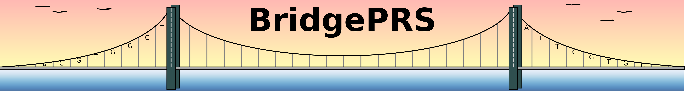

Sample Data
Once you have confirmed that your system is up to date and libraries are installed, you can locate the toy-data used in the demo. Located in the data directory, the data are formatted as population configuaration files, that point to the files associated with the target and base populations being used to run bridgePRS:
POP=AFR
LDPOP=AFR
SUMSTATS_PREFIX=pop_africa/sumstats/eur.chr
GENOTYPE_PREFIX=pop_africa/genotypes/afr_genotypes
PHENOTYPE_FILE=pop_africa/phenotypes/afr_test.dat
VALIDATION_FILE=pop_africa/phenotypes/afr_validation.dat
SNP_FILE=pop_europe/snps.txt
POP=EUR
LDPOP=EUR
SNP_FILE=pop_europe/snps.txt
SUMSTATS_PREFIX=pop_europe/sumstats/eur.chr
GENOTYPE_PREFIX=pop_europe/genotypes/eur_genotypes
PHENOTYPE_FILES=pop_europe/phenotypes/eur_test.dat
Examining one the phenotype files pointed to by the configuration file, reveals the two variables ("y" and "y.binary") used in the tutorial.
FID IID y y.binary
BridgePRS check data
Before running BridgePRS can be used to verify your population data by providing the following command:
BridgePRS Begins at Mon Oct 30 16:14:18 2023
Bridge Command-Line: ../bridgePRS check data -o out --config_files ../data/afr.config ../data/eur.config
Checking Requirements:
System: platform=linux, cores(available)=8, cores(used)=1 (TIP: Using More Than One Core Will Improve Performace (e.g. ---cores 7))
Plink: found=true, path=/home/tade/Bin/plink
R: found=true, path=/usr/bin/R, version=3.6.3 (packages=up to date)
Python3: found=true, path=/usr/bin/python3, matplotlib=true
Reading Population Data:
Target Source: POP=AFR LDPOP=AFR
Sumstats: SUMSTATS_PREFIX=/data/pop_africa/sumstats/afr.chr SUMSTATS_SUFFIX=.glm.linear.gz (WARNING: Not Given - Inferred From Directory)
QC-Snps: SNP_FILE=data/pop_africa/snps.txt TOTAL=19685
Genotypes: GENOTYPE_PREFIX=data/pop_africa/genotypes/afr_genotypes
Phenotypes: PHENOTYPE_FILE=data/pop_africa/phenotypes/afr_test.dat VARIABLES=y,y.binary
Phenotypes: VALIDATION_FILE=data/pop_africa/phenotypes/afr_validation.dat
**Target Config Made: out/save/target.AFR.config
Base Source: POP=EUR LDPOP=EUR
Sumstats: SUMSTATS_PREFIX=data/pop_europe/sumstats/eur.chr SUMSTATS_SUFFIX=.glm.linear.gz (WARNING: Not Given - Inferred From Directory)
QC-Snps: SNP_FILE=data/pop_africa/snps.txt TOTAL=19711
Genotypes: GENOTYPE_PREFIX=data/pop_europe/genotypes/chr
Phenotypes: PHENOTYPE_FILE=data/pop_europe/phenotypes/eur_test.dat VARIABLES=y,y.binary
**Base Config Made: out/save/base.EUR.config
Complete
For more information on the configuration or phenotype filetype, see Guide: Input Data, or to run the tutorial demo go to the next page.